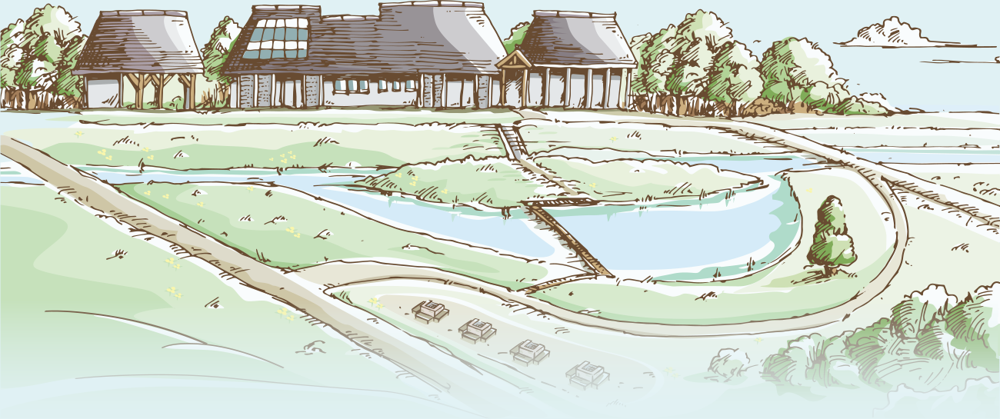
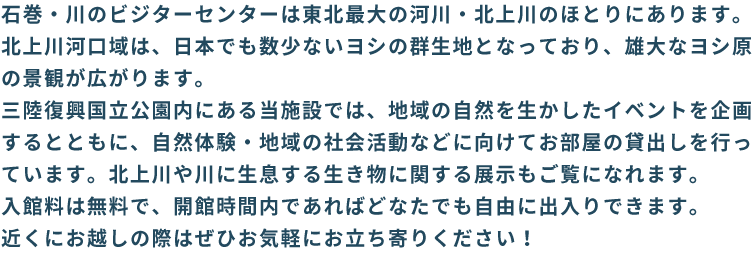

石巻・川のビジターセンターは東北最大の河川・北上川のほとりにあります。
北上川河口域は、日本でも数少ないヨシの群生地となっており、雄大なヨシ原の景観が広がります。
三陸復興国立公園内にある当施設では、地域の自然を生かしたイベントを企画するとともに、自然体験・地域の社会活動などに向けてお部屋の貸出しを行っています。北上川や川に生息する生き物に関する展示もご覧になれます。
入館料は無料で、開館時間内であればどなたでも自由に出入りできます。
近くにお越しの際はぜひお気軽にお立ち寄りください！
所在地：宮城県石巻市北上町十三浜字東田1
車：三陸自動車道「河北IC」から30分。
ICを降りて国道45号を北に進み、
県道197号を東に進みます。